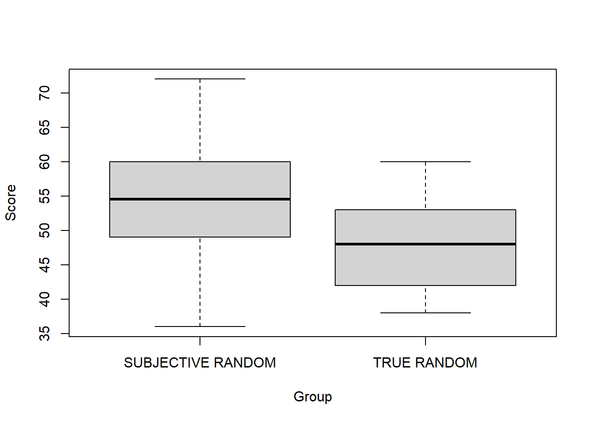
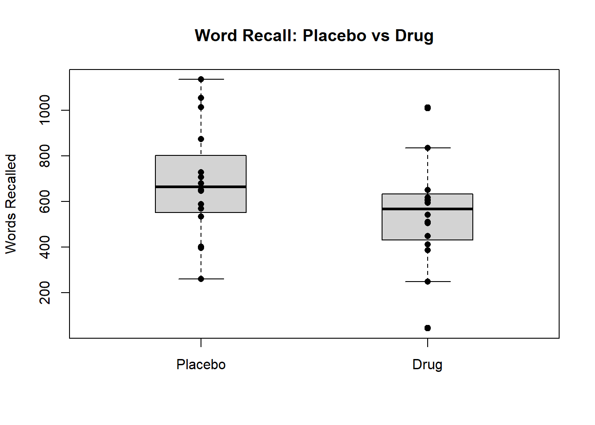
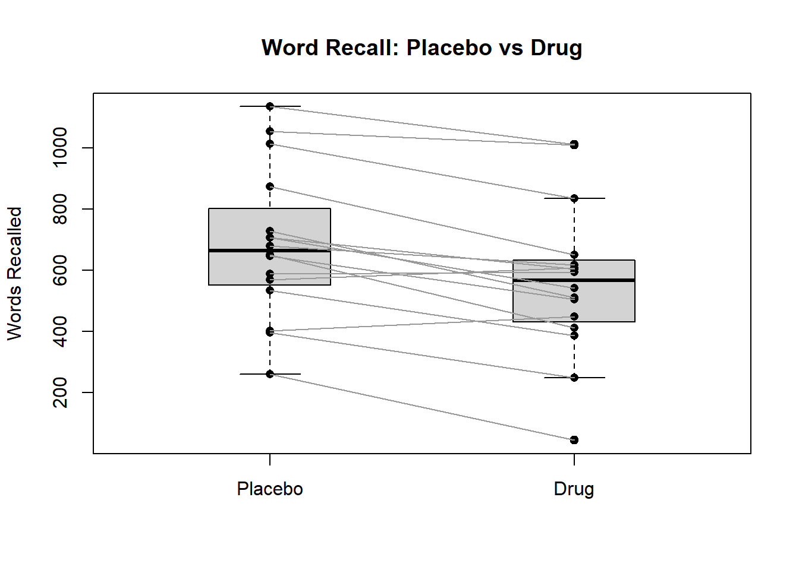

1 + 1[1] 2This document was built using Quarto. Quarto enables you to weave together content and executable code into a finished document. To learn more about Quarto see https://quarto.org.
Below is a snippit of R code that is executed when the document is created.
You can copy these code snippits into your own RStudio to begin to build you own analyses. As you go through the document create a new R script in RStudio and add the code section one after another. By then of this each section you will have built an analysis pipeline for each type of design. You can then use this as a basis for future analyses.
The data below come from two groups of participants taking part in an experiment in which they are presented with a sequence of images. On each trial the participant had to choose one of two options for the next image in the sequence, one option was the correct answer and the other incorrect. This means that performance at the level of chance is 50%. Each subject takes part in the experiment only once and was randomly allocated to one of the groups. The ‘Subjective Random’ group had a hidden pattern in the sequences that the researcher believes will alter the number of correct responses. The scores represent the percentage of correctly answered trials for each participant.
Below is some code loading the dataset and doing a basic inspection:
Group Score
1 SUBJECTIVE RANDOM 48
2 SUBJECTIVE RANDOM 58
3 SUBJECTIVE RANDOM 56
4 SUBJECTIVE RANDOM 60
5 SUBJECTIVE RANDOM 72
6 SUBJECTIVE RANDOM 55 Group Score
Length:44 Min. :36.00
Class :character 1st Qu.:46.00
Mode :character Median :51.00
Mean :51.11
3rd Qu.:56.00
Max. :72.00 As we have seen before, R doesn’t know that out df$group variable is actually a catgorical variable so let’s change that and recheck the summary(df) output.
Group Score
SUBJECTIVE RANDOM:20 Min. :36.00
TRUE RANDOM :24 1st Qu.:46.00
Median :51.00
Mean :51.11
3rd Qu.:56.00
Max. :72.00 We can now see that it correctly summarises the Group variable as a categorical variables with 2 categories.
Like we before we can use the by() function to get summary statistics for each group. We also saw in Tutorial 1, that to use the sd() function within by() we needed to only get standard deviations of numerical data by selecting certain columns.
df$Group: SUBJECTIVE RANDOM
Group Score
SUBJECTIVE RANDOM:20 Min. :36.00
TRUE RANDOM : 0 1st Qu.:49.50
Median :54.50
Mean :54.65
3rd Qu.:60.00
Max. :72.00
------------------------------------------------------------
df$Group: TRUE RANDOM
Group Score
SUBJECTIVE RANDOM: 0 Min. :38.00
TRUE RANDOM :24 1st Qu.:42.00
Median :48.00
Mean :48.17
3rd Qu.:52.50
Max. :60.00 df$Group: SUBJECTIVE RANDOM
[1] 8.080353
------------------------------------------------------------
df$Group: TRUE RANDOM
[1] 6.431354Look at the descriptive statistics, do they at first glance indicate any differences between the groups?
The Subjective Random group appear to have higher scores on average than the True Random group. It is also good to note that there are more subjects in the True Random Group and that the variability in the Subjective Random group is greater.
Now we want to visualise this using a boxplot. We previously learnt how to generate boxplots using a type of input called a formula. See Tutorial 1 if you need a refresher.
What would be the formula we would need to give to boxplot() to create a plot of Score split by Group?
Score ~ Group
We now want to test if there is a statistically significant difference between the scores for the two groups. Since we have two independent groups, with no participant appearing in both groups, the most appropriate test here is an independent samples t-test. The function for conducting t-tests in R is called t.test(), by controlling various of the input arguments we can ask it to carry out various different types.
Happily, the two main input arguments that the t-test() function needs are the same as the boxplot() function, it first needs at formula and then the data to apply it to. Since we are going to use this formula for both the functions, it is worth us getting R so save it as a separate variable. We can do this using the <- operator like we have for any other variable. In general in programming if you are going to use something more than once it is good practice to assign it to a variable. This saves you typing everything out repeatedly but also makes your code a bit more flexible and reusable.
[1] "formula"
Welch Two Sample t-test
data: Score by Group
t = 2.9029, df = 36.055, p-value = 0.006272
alternative hypothesis: true difference in means between group SUBJECTIVE RANDOM and group TRUE RANDOM is not equal to 0
95 percent confidence interval:
1.954047 11.012620
sample estimates:
mean in group SUBJECTIVE RANDOM mean in group TRUE RANDOM
54.65000 48.16667 The output of the t.test() function contains all of the bit of information we would need to report the results for a paper or a report.
Here is a basic statistical report in APA format for this test:
A Welch two-sample t-test indicated a significant difference between the mean scores in the two groups (t(36.06) = 2.96, p = .006), with the Subjective Random group displaying a higher mean (54.7) than the True Random group (48.2).
There is a crucial bit of information in this output that might have been missed. This is that the test used was a Welch two sample t-test. This particular test is designed to be used when the variance in our two groups is unequal. Checking assumptions such as this an important aspect of deciding if a statistical test is valid for our particular data and we will cover this in later lessons. For now we are going to pretend that the variance in our two groups is equal and in that case the best test to use is the standard Student’s two sample t-test. As with other function we have seen we can change the behaviour of a function like t.test() by adding additional input arguments and the best way to find out what these are is by checking the help for that function by running help(t.test) or ?t.test in our console.
Here to perform the students two sample we want to tell it that the variances are equal:
Two Sample t-test
data: Score by Group
t = 2.9642, df = 42, p-value = 0.004983
alternative hypothesis: true difference in means between group SUBJECTIVE RANDOM and group TRUE RANDOM is not equal to 0
95 percent confidence interval:
2.069372 10.897295
sample estimates:
mean in group SUBJECTIVE RANDOM mean in group TRUE RANDOM
54.65000 48.16667 The results are similar to before but there are a few changes. Write out the results in a standard format like before but using the results of the students t-test.
A Students two-sample t-test indicated a significant difference between the mean scores in the two groups (t(42) = 2.96, p = .005), with the Subjective Random group displaying a higher mean (54.7) than the True Random group (48.2).
The researcher in this study also wanted to check if performance in the SUBJECTIVE RANDOM group was significantly better than the chance level of performance of 50%.
First we need to get only the scores from this particular group. In Tutorial 1 we saw how we could use square brackets [] to index and select specific bits of data from a larger set. In Tutorial 2 we saw how we could check if things we > or < a number and R would return LOGICAL values. We can combine these approaches to select only the df$Score values that belong to the participants who were part of the df$Group with values of SUBJECTIVE RANDOM. Here we aren’t asking if something is less than or greater than something else, but instead checking for equivalence, in other words does something equal something else. The syntax to do this in R is ==.
Now we can use our new subj_scores variable in the t.test() function. However, there are a couple of other bits of information we need to supply. First is what the value we are testing against is. By default t.test() will test our data against a mean value of 0, however, here we want to test against a value of 50 as this is the chance level. The second thing is that we need to specify that in this case we are only checking if the scores are greater than this value. This means we are conducting a one-tailed test. The default in t.test() is for a two-tailed test so we need to modify the functions behaviour using another input argument:
One Sample t-test
data: subj_scores
t = 2.5736, df = 19, p-value = 0.009302
alternative hypothesis: true mean is greater than 50
95 percent confidence interval:
51.52577 Inf
sample estimates:
mean of x
54.65 You probably noticed that we didn’t use a formula as input this time, and instead just passed the data directly as an input. A lot of functions in R can work either with formula or with data, you will see this at the top of their help documents. In this case it was simpler just to use the data directly.
Try to write out the results of the one sample t-test in the standard APA format.
The mean score (54.6) in the Subjective Random group was significantly greater than the chance score of 50% (t(19) = 2.57, p = .009).
For this data a researcher is testing a cognitive enhancement drug. They have taken a group of participants and got them to read a long document twice, one while taking a placebo and once while taking the drug (in a counter-balanced order). The have then recorded the number of words that they read in a set period of time.
Here is the code to read the data:
Placebo Drug
1 680 618
2 875 651
3 261 45
4 729 512
5 647 505
6 403 449 Placebo Drug
Min. : 261.0 Min. : 45.0
1st Qu.: 560.2 1st Qu.: 440.0
Median : 665.5 Median : 568.5
Mean : 684.8 Mean : 564.8
3rd Qu.: 765.5 3rd Qu.: 626.2
Max. :1136.0 Max. :1012.0 From earlier tutorials can you remember the code to check the number of participants in this study? Remember, that each participant is a row of the dataframe.
dim(df)
For paired data, where we have our data organised as two separate variables in the dataframe already, we don’t need to use the formula method for creating a boxplot. We can simply do:
However, this is missing some important elements for a figure we would want to include in a paper or report. What are some of these things?
Axis titles (and units if appropriate), a title. Colours for different groups are optional but a good way to make graphs more instantly interpretable for the reader.
Try copying the boxplot(df) code to your own script and adding some of these additional features. You can either use ?boxplot to explore them or look at examples in previous tutorials to see some ways of doing this.
If we look at the boxplot it seems like there is a large overlap between the number of words read between the two conditions. However, a boxplot does not take into account one very important bit of information about our data and experimental design in this case. What is this?
We have a paired or within-subjects design (also often called repeated measures). This means that the score in one condition is dependent on the score in the other condition because they are generated by the same participant. For example someone might just be faster at reading in general, regardless of any drug effect.
One nice way to improve boxplots and to add more detail to your figures is to plot the individual data points on top of the boxplot. One way to do this in R is to use the points() function

The way the points are created is that rep(1, nrow(df)) creates a vector of the number 1 which is the same length as the number of rows as df. This tells points() to plot all the values of the placebo group at a value of 1 on the x-axis but use their value for their position on the y-axis. The same is then repeated for the drug group, with all of their points at a value of 2 on the x-axis.
With the points overlayed there still seems to be larger overlap between the groups, and just from examining this plot we may think it unlikely that there is a difference between the two conditions. However, if we connect the points in the two groups that match each participants value in the two conditions a pattern emerges:
boxplot(df, main = "Word Recall: Placebo vs Drug", ylab = "Words Recalled",
boxwex = 0.4)
# add points on top
points(rep(1, nrow(df)), df$Placebo, pch = 16, col = "black")
points(rep(2, nrow(df)), df$Drug, pch = 16, col = "black")
# connect each subject's pair of points with a line
segments(x0 = 1, y0 = df$Placebo, x1 = 2, y1 = df$Drug, col = "grey60")
We can now see that most of the lines point downwards, indicating a decrease in the number words read in the placebo condition to the number of words read in the drug condition. Before we drew these lines the between-subjects variance was obscuring a within-subjects difference.
So if we want to statistically test the difference between the two conditions we need to make sure we use the correct version of the t.test() function and to make sure it is aware that we have paired data (also called dependent data). If we look at the results of a independent samples t-test, we can see no significant difference (t(30) = 1.38, p = 0.177).
Two Sample t-test
data: df$Placebo and df$Drug
t = 1.3821, df = 30, p-value = 0.1771
alternative hypothesis: true difference in means is not equal to 0
95 percent confidence interval:
-57.31391 297.31391
sample estimates:
mean of x mean of y
684.8125 564.8125 However, if we conduct a dependent samples t-test we can find a statistically significant difference:
Paired t-test
data: df$Placebo and df$Drug
t = 5.1921, df = 15, p-value = 0.0001094
alternative hypothesis: true mean difference is not equal to 0
95 percent confidence interval:
70.73784 169.26216
sample estimates:
mean difference
120 Also notice that now instead of reporting the mean of the two groups separately, the output now reports the mean difference between the paired values in the two conditions. This highlights the strength of within-subjects designs as the between subject variance is removed and only the within subject variance analysed.
Write out the results of the paired sample t-test in the standard format as you would in a report:
The paired samples t-test showed a significant difference between the number of hours read in the Placebo and Drug conditions (t(15) = 5.19, p < 0.001), with a mean difference of 120 more words read in the Placebo condition.
We have seen that boxplots for within subject designs might hide some of the important patterns in the data that we are most interested in. One other way we can look at this is to compute the pairwise differences between conditions and plot these as a histogram.
What is the name of the function we use to plot histograms in R, and how would we use it to plot a histogram of this new difs variable? (Hint, see tutorial 2)
hist(difs)
We can also directly test the hypothesis we are interested in on the difs variable. Our null hypothesis in this case is that there is no difference in the number of words read per condition. Therefore, if this was true we would expect the mean value of the difs variable to be close to 0. In the previous section we use a version of a t-test to check if a variable had a mean of a specific value of 50. What type of t-test was this?
One sample t-test
Here is the code to test the hypothesis using this test.
One Sample t-test
data: difs
t = 5.1921, df = 15, p-value = 0.0001094
alternative hypothesis: true mean is not equal to 0
95 percent confidence interval:
70.73784 169.26216
sample estimates:
mean of x
120 What do you notice about the p value, degrees of freedom, and the t value when comparing these to the paired samples t-test we conducted?
They are all identical, this is because a paired samples t-test and a one sample t-test of the pairwise differences are exactly the same thing.